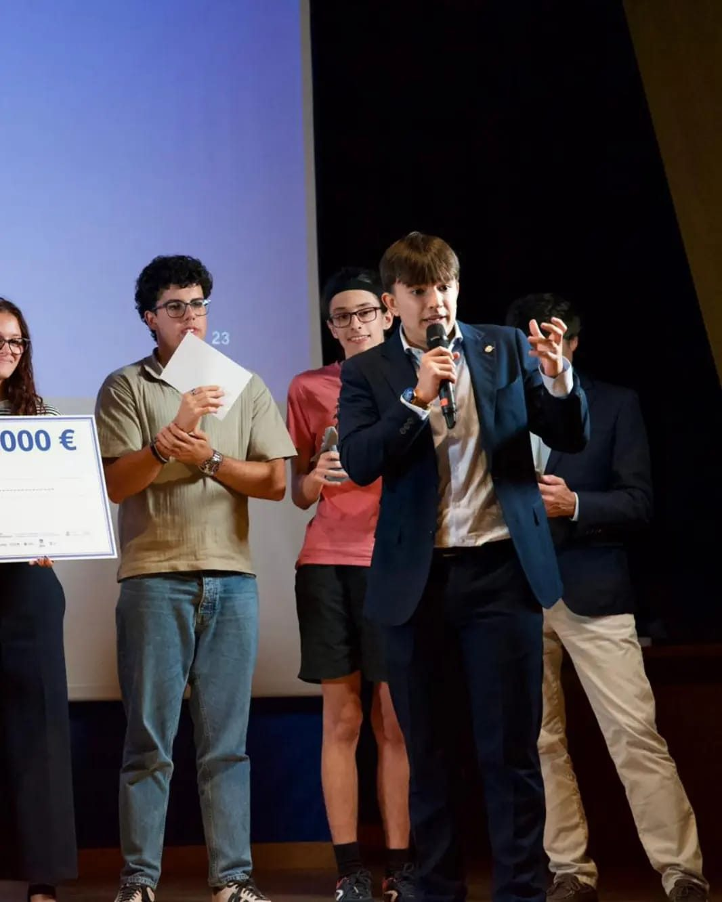
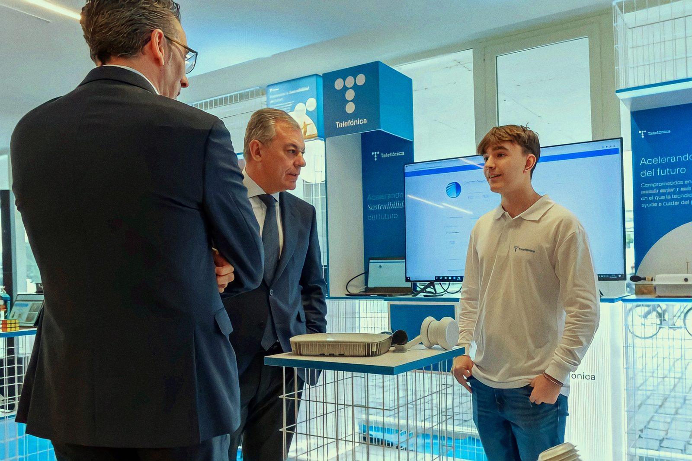
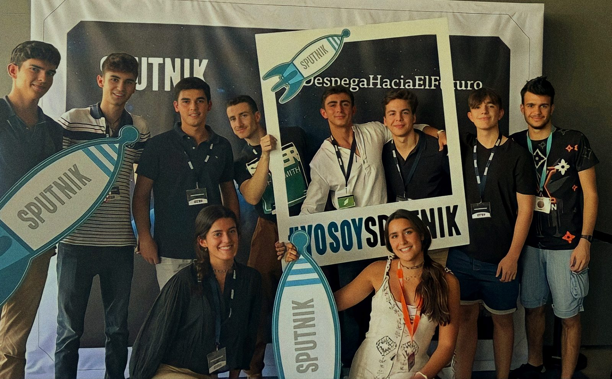

About
I'm Jesús Pérez Bazarot, from Seville. I'm in my fourth year of Computer Engineering at the Universidad de Sevilla, and I spent my third year at the Beijing Institute of Technology.
Most of my time goes to two things. The first is continual learning in world models. I ran a 375-run benchmark on how they forget and wrote it up alone; it's under review at a NeurIPS 2026 workshop. Task distance doesn't predict how much a model forgets, and the forgetting that matters happens in the encoder, where the usual metrics don't look. One of those results refuted the method I set out to propose, and it went in the paper anyway.
The second is the level below the model. Hand-written CUDA scan kernels that sustain up to 91.5% of a laptop GPU's memory bandwidth came out of HybridMamba-11, my entry for OpenAI's Parameter Golf, where I had to rewrite the Mamba recurrence as a parallel scan in plain PyTorch to get it to compile.
I build most of my tools for myself. Perseo, the assistant I've been rebuilding since 2023, reads my mail and calendar. NightShift works through a queue of coding tasks overnight. Kotoba is how I study Japanese.
In my first year of university I was CTO of a small hardware startup, and I gave a talk on Telefónica's innovaTE stage, where I also introduced the Mayor of Seville. Then I co-founded a carpooling company that didn't survive.
Next I want to do a PhD in machine learning, with MIT as the target, and eventually use it for conservation. That's why there's a shark on this site.
Three or four evenings a week I do martial arts. I speak Spanish and English (C1) and conversational Chinese, and I'm learning Japanese.



Timeline
- 2025–nowIndependent AI/ML research: world models, continual learning, LLM benchmarking
- 2025–26Exchange year at the Beijing Institute of Technology
- 2025AI/ML developer at OrgaAI, audio and transcription pipeline (under NDA)
- 2024–25Co-founder and co-CTO of ByTheWay Carpool
- 2023–nowBSc Computer Engineering, Universidad de Sevilla (expected June 2028)
- 2023–24Research intern, Minerva Research Group, Universidad de Sevilla
- 2023–24CTO of NetKey, NFC networking hardware
- 2023Speaker at Telefónica innovaTE, on NB-IoT and sustainability
- 2023First of 20 teams in the Wanted entrepreneurship competition
- 2023NASA Space Apps Challenge